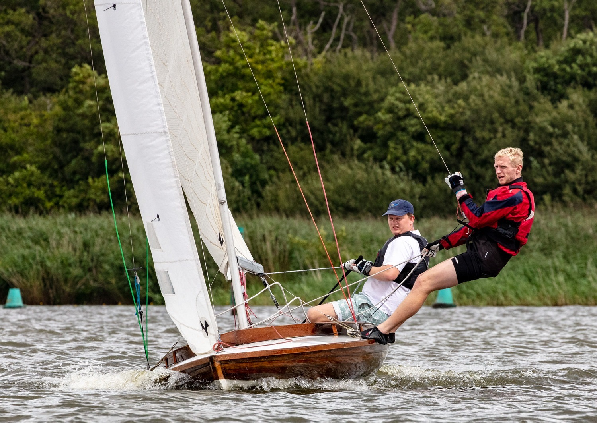
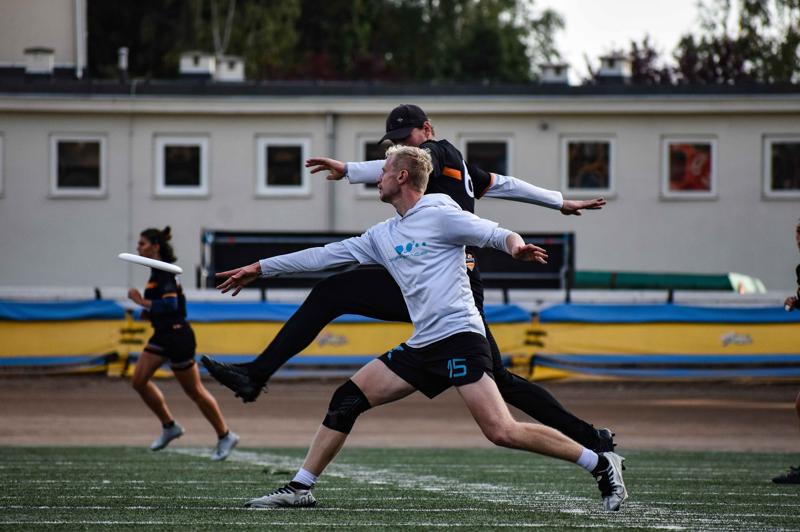
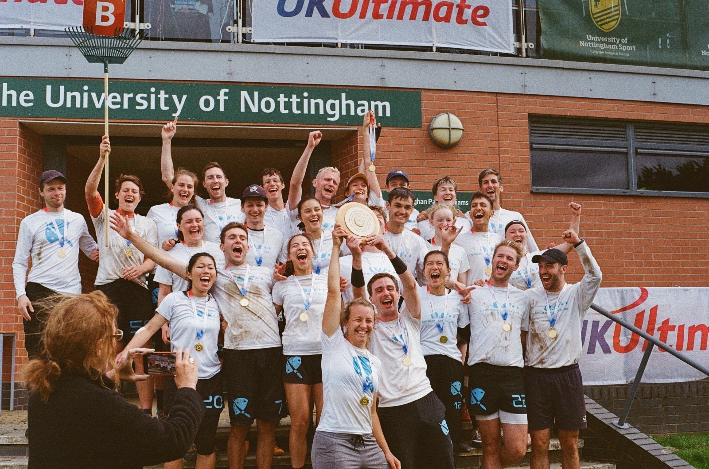
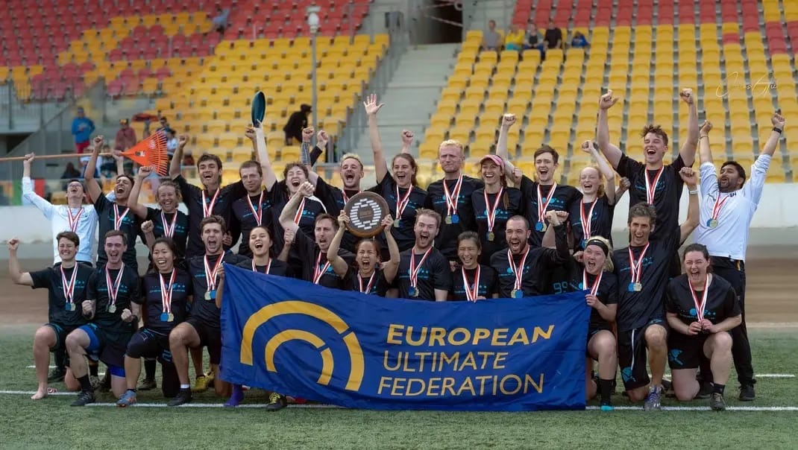
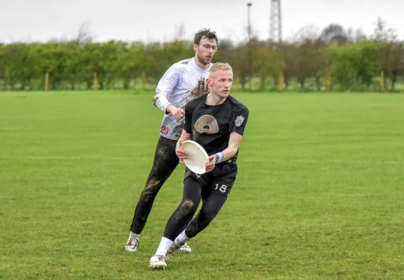

Growing up in Norfolk I learned to sail from a young age and was part of the Norfolk Punt Club for a number of years. I have participated in the punt class world championships a few times and occasional smaller dinghy races.
In the summer of 2018 I worked as a lifeguard/ sailing instructor on a camp in New York state.
---
When I started at Loughborough University I found the Ultimate Frisbee club. I have played since then for \University and Club teams around the UK, competing at tournaments at the national and international level.
In 2023 I joined and competed with the London-based mixed team, Deep Space. This involved multiple trainings a week throughout the season (Feb-Oct) and atending tournaments around the UK and abroad. We won the UK National Championship and the European Championship in Wroclaw (both a first for the club). We also won the 'spirit-of-the-game' medal in the mixed division at the European Championships, which is a measure of the teams attitude and fair-mindedness.
Again, in 2024 I competed. We compteted at tournaments in London, Birmingham, Padova, Reading, Leuven, Nottingham and Brussels. This year we won the UK Regional Championship, went on to win the UK National Championship and the European Championship in Brussels, going back-to-back both nationally and on the continent.
I became a GLL sponsored athlete in early 2025.
  I have also contributed back to the community by coaching universities and clubs. In 2021 I coached the University of East Anglia Ultimate team and in 2024 I coached the Cambridge University ultimate team. The university season happens mostly over the winter and spring.
---
I run semi-regularly at park-runs and enjoy some cycling. In late 2025 I cycled 200km over two days with some friends from Hackney in London to Norwich.